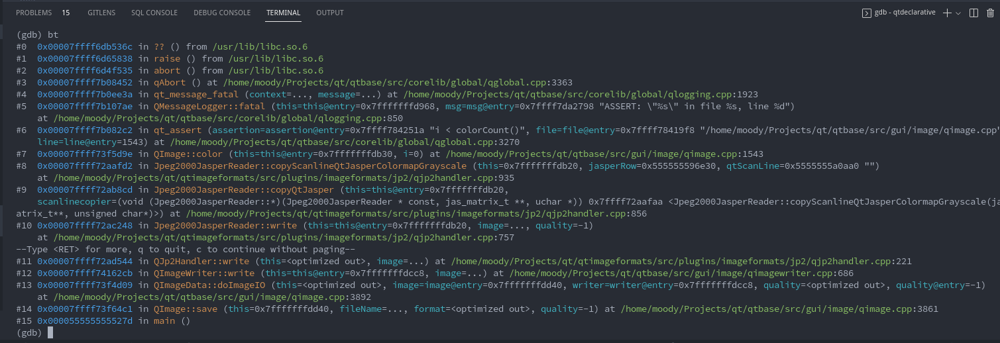
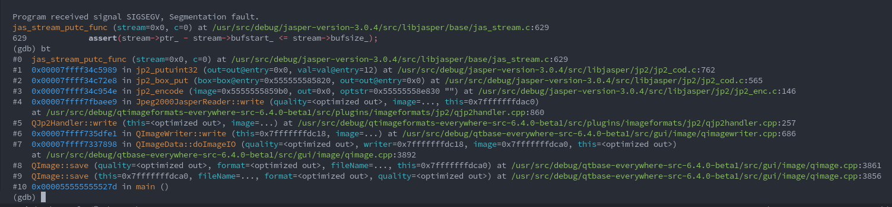

放假了! 链接到标题
由于 qmlls 崩溃了一整天，我终于放弃调查了，于是开始水群：
#archlinux-cn:
CuiHao: 最近 Spectacle 和 Plasmashell 在截图后疯狂 segfault，有人遇到吗
CuiHao:
#4 0x00007fd47872e774 in jas_stream_putc_func () from /usr/lib/libjasper.so.6Spactacle 崩这儿了hosiet: libjapser? 为啥 arch 还在用这个
CuiHao: https://bugs.kde.org/show_bug.cgi?id=455362 扔了个 bug，但感觉是 qt 的 bug
csslayer: 不能修一下吗，是不是什么时候就和 jasper 不兼容了
CuiHao: https://bugreports.qt.io/browse/QTBUG-104398 报了反正
仔细查看 QTBUG-104398 后，我也在本地成功用 Qt 6.5 复现了这个 crash：
首先写一个 cpp
|
|
然后尝试编译：
|
|
运行并进行爆炸观测：
|
|
首先映入眼帘的就是一串大写的 WARNING：“你的代码用了老旧 API，这 API 马上就要删了 blablablabla……"，随后是
关键性的 use of jas_init is deprecated
而这之后是一个没有设置内存上限的警告
再之后就是爆炸现场了：'./test' terminated by signal SIGSEGV
首先使用 gdb 进行一个 backtrace 的查：

可以观测到（#6）这里的一个 ASSERT 炸掉了：
|
|
继续跟进后，发现 colorCount() 的返回值是 0，即 Color Table 的大小为 0，后来经过研究发现是这个
复现例子写错了：
If format is an indexed color format, the image color table is initially empty and must be sufficiently expanded with
setColorCount()orsetColorTable()before the image is used.
（尽管同样是崩溃，但 QImage::Format_Grayscale8 导致没初始化 color table 触发的崩溃与 Jasper 无关）
于是把 QImage::Format_Grayscale8 改成 QImage::Format_RGB32 后，得到了另一个错误：

再次查看源码，可以得知 memory_stream 其实是个 nullptr：
|
|
最后定位到根本原因是 jas_stream_memopen 的第二个参数不应为 -1，而应该是 0。
传入 -1 后会因为参数类型是 size_t 而被转换成 18446744073709551615，由于无法进行如此巨大量的 malloc 分配，
jas_stream_memopen 返回了 0，也最终导致在后续函数中进行了空指针解引用。
于是一篇文章就这么水完了 :)
- 为对应的函数添加 Deprecated 警告: https://github.com/jasper-software/jasper/pull/327
- 为 JasPer 3 使用新的 API https://codereview.qt-project.org/c/qt/qtimageformats/+/417088
- 修复错误的 buffer size: https://codereview.qt-project.org/c/qt/qtimageformats/+/417082